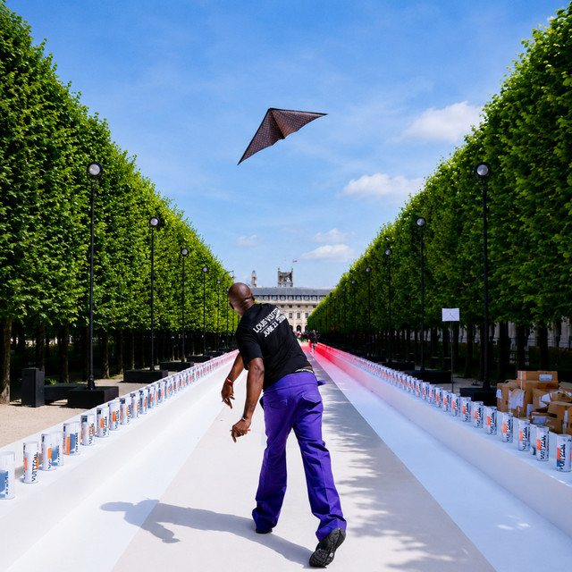

The Eclectic Polymath Podcast · Archive
#024: The Fashion Revolution, The Cathedral and The Disruptors

About this episode
Welcome back to The Eclectic Polymath Podcast, a curiosity driven deep dive show built around the questions that pull us in.
Fashion has always been more than clothing. It is a language of status, identity, taste, belonging, rebellion, and power.
This episode traces the industry’s move from an elite European cathedral built around French couture, luxury houses, and gatekeeping into a more open battlefield shaped by streetwear, digital platforms, celebrity, and cultural representation.
Key points
- Welcome back to The Eclectic Polymath Podcast, a curiosity driven deep dive show built around the questions that pull us in.
- This episode traces the industry’s move from an elite European cathedral built around French couture, luxury houses, and gatekeeping into a more open battlefield shaped by streetwear, digital platforms, celebrity, and cultural representation.
- We look at how figures like Virgil Abloh, Rihanna, and Kanye West challenged the old rules of luxury, while conglomerates like LVMH and Kering turned fashion into a global corporate machine.
More like this
 #221 The Homestead: Who Got Set Up, Who Got StrippedOctober 18, 20261:14:22
#221 The Homestead: Who Got Set Up, Who Got StrippedOctober 18, 20261:14:22 #219 The Grove & The Americana: Fake Towns, Real EmpireOctober 17, 202649:36
#219 The Grove & The Americana: Fake Towns, Real EmpireOctober 17, 202649:36 #217 A Different World: The Sitcom That Refused to EndOctober 16, 202651:08
#217 A Different World: The Sitcom That Refused to EndOctober 16, 202651:08 #048 The People’s Princess: Diana, the Crown, and the Media MachineJune 10, 202655:46
#048 The People’s Princess: Diana, the Crown, and the Media MachineJune 10, 202655:46